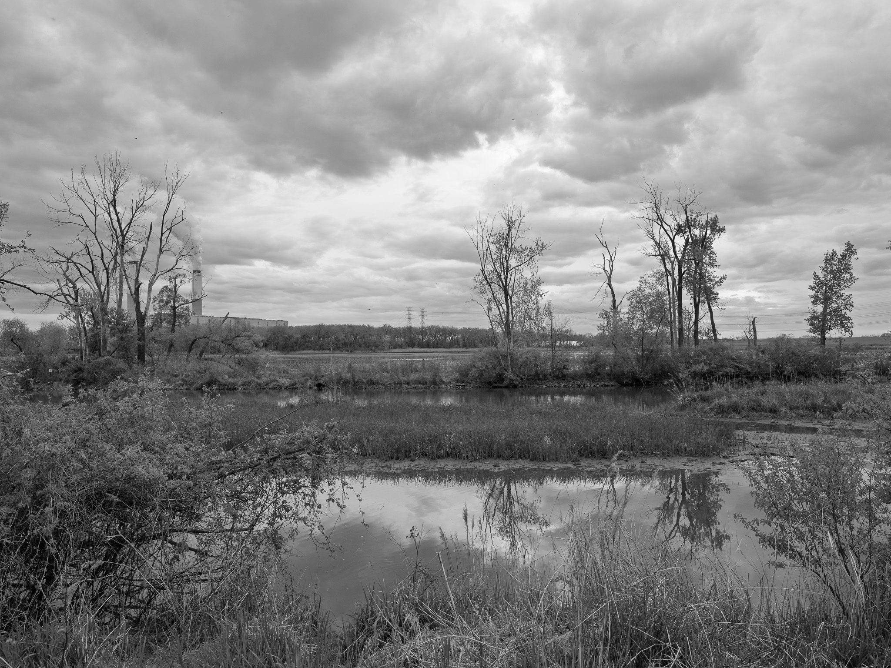
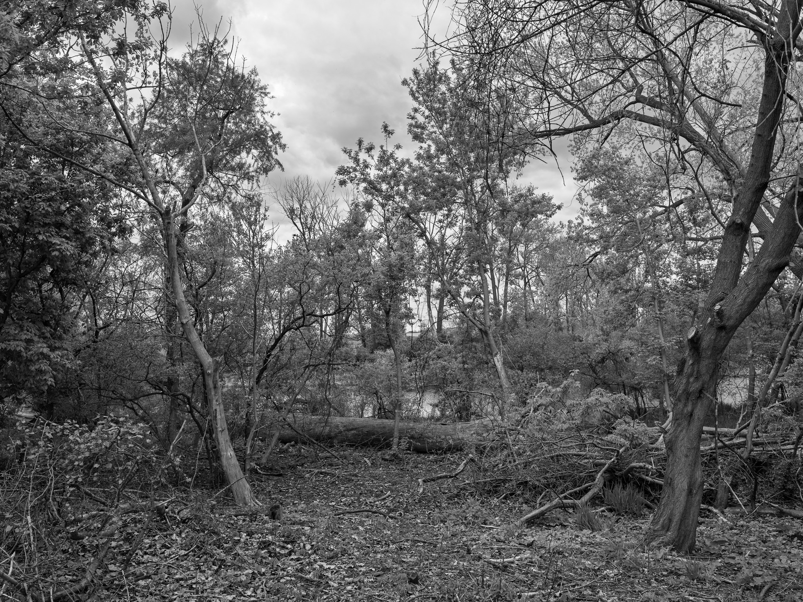
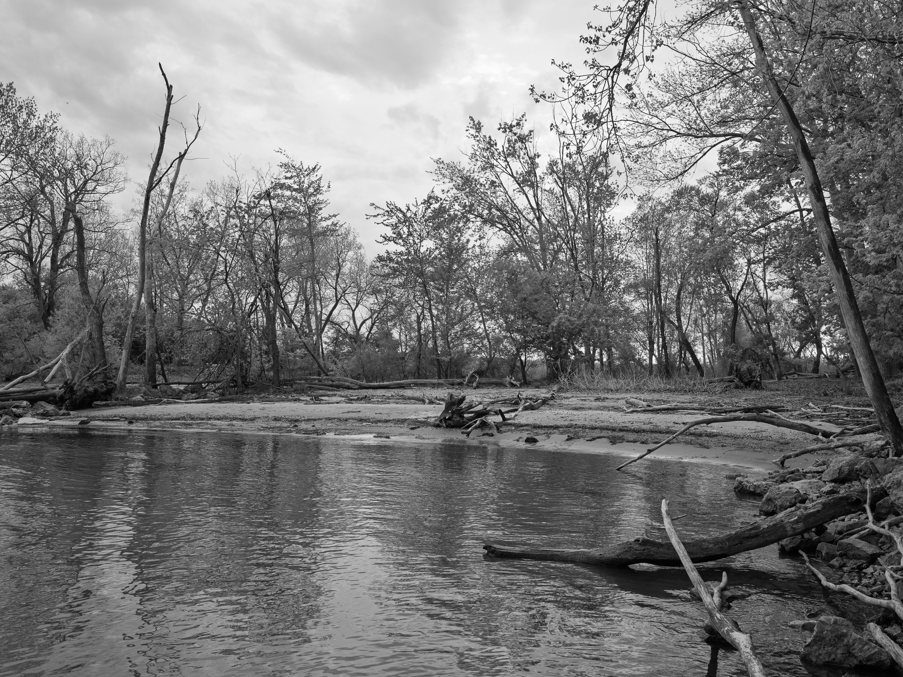
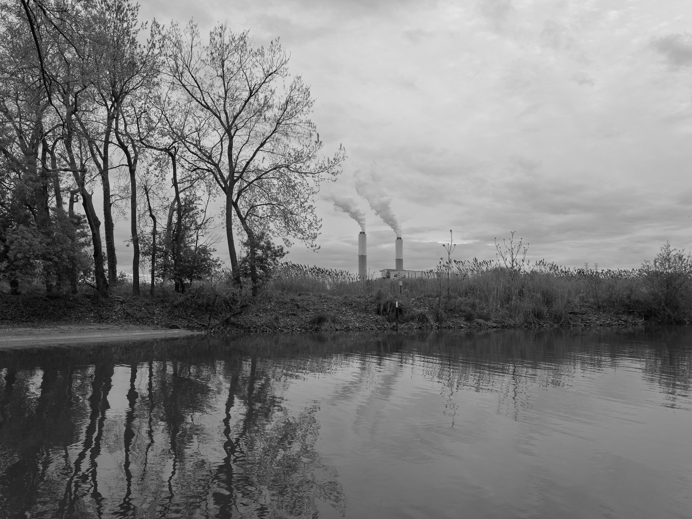

Public Lands Institute
Map
Archive
About
Ford Marsh Unit, Detroit River International Wildlife Refuge
MI

Ford Marsh Unit, Detroit River International Wildlife Refuge 1 · 2026-05-06
_DSF1875.jpg

Ford Marsh Unit, Detroit River International Wildlife Refuge 2 · 2026-05-06
_DSF1880.jpg

Ford Marsh Unit, Detroit River International Wildlife Refuge 3 · 2026-05-06
_DSF1914.jpg

Ford Marsh Unit, Detroit River International Wildlife Refuge 4 · 2026-05-06
_DSF1917.jpg
View all 4 images →
← Oak Openings Metropark
William C. Sterling State Park →